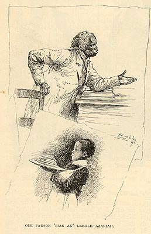

OLE PARSON 'BIAS AN' LEETLE AZARIAH
These are minor characters in the tale, but give us another couple examples of Kemble's art, and of "slaves" on Marse Jeems plantation, in church and in the big house.
"How Jerry Bought Malviny,"
Century
(October 1890)